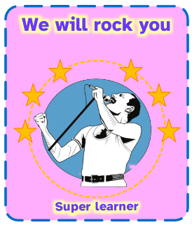

Dictionary
Review

Spanish word:
Revisión
Audio:
Spanish word:
Revisión
Audio:
 Let’s think about your music adventure!
Let’s think about your music adventure!
Use the assessment target to show how you feel about your work.
Think and colour the circles
.
Tú reflexiona sobre cómo has trabajado.
Tú colorea la diana de evaluación
Let’s think about your music adventure!
Great job, musician!
You have finished the challenge.
The Queen Band and I thank you for your work.
Before we say goodbye, let’s review all the things you did!
Definition:
Analyze carefully.
Analizar con atención.
Example:
I review homework.
Hago la revisión de la tarea.
Spanish word:
Revisión
.
 Great job!
Great job!¡Un trabajo fantástico!
 Queen and I thank you your work.
Queen and I thank you your work.La banda Queen y yo te agradecemos tu trabajo.
 You can see your work in the image.
You can see your work in the image.Tú puedes ver tu trabajo en la imagen.
(Click on the image)
To finish, let's look at your learning journal and see how you faced the challenges in the 4 steps.
For your effort, you have earned your first badge, Mega Apprentice!
Well done!

Para concluir, revisemos tu diario de aprendizaje y analicemos cómo enfrentaste los desafíos en los cuatro pasos.
Por tu esfuerzo, has ganado tu primera insignia, que recibirás como Mega Aprendiz
¡Felicidades!
Licensed under the Creative Commons Attribution Non-commercial Share Alike License 4.0
{kind=link}